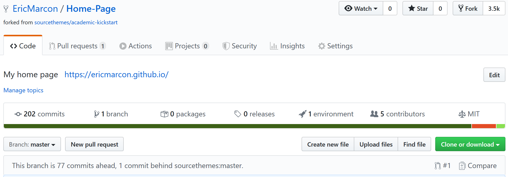
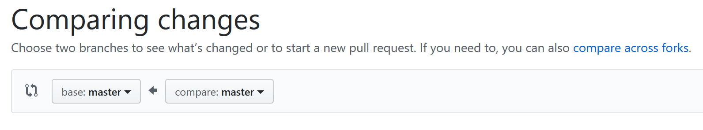
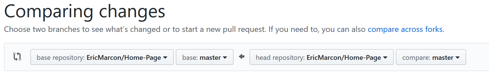
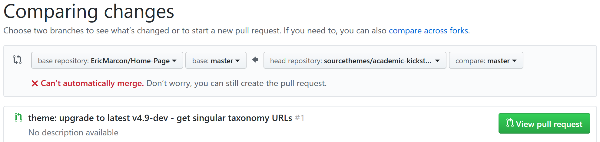
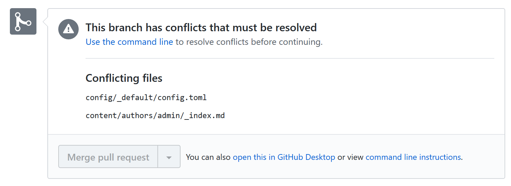
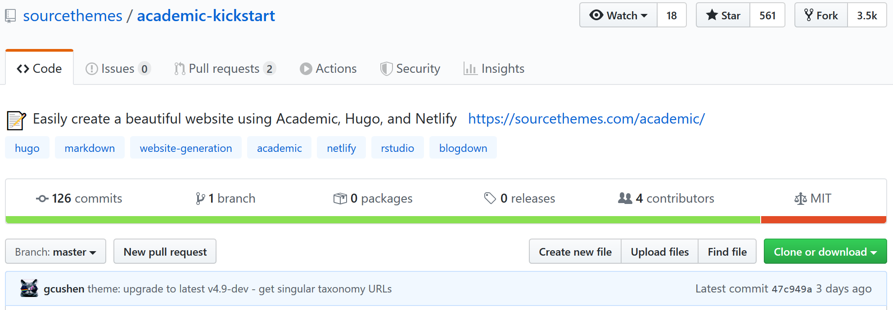
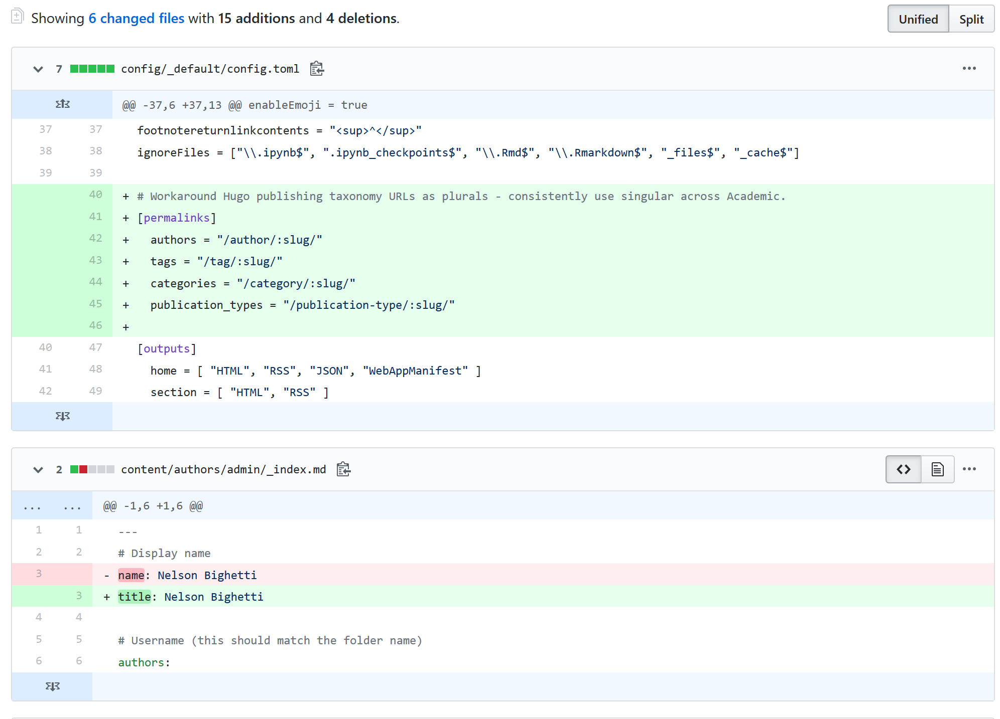

Mise à jour du thème Academic

Ce site est généré par blogdown sous R, avec le thème Academic pour Hugo.
La documentation suivante est valide pour les versions d’Academic antérieures à septembre 2020.
Le version en cours ne nécessite plus de mise à jour du thème par Git mais installe une version à jour à chaque compilation avec Go. Se référer à la documentation à jour.
Installation
L’installation est faite dans RStudio en suivant la documentation d’Academic. C’est un fork du dépôt Academic-Kickstart, ce qui permet de le mettre à jour.
Le fork doit être complété par l’installation du sous-module correspondant au thème avec la commande git submodule update --init --recursive.
Pour le bon fonctionnement de blogdown, le fichier config/_default/config.toml doit être déplacé à la racine du projet.
Enfin, si le site est multilingue, le contenu du site (dossier content) doit être copié dans un dossier correspondant à chaque langue. Par exemple, le fichier content/authors/admin/_index.md qui contient les informations sur le propriétaire du site est dupliqué dans content/en/authors/admin/_index.md et content/fr/authors/admin/_index.md si le site supporte l’Anglais et le Français.
Mise à jour
Fusion des modifications
La structure du site et le thème peuvent être mis à jour à tout moment, dès que le dépôt GitHub indique qu’il est en retard sur l’original (ici: “1 commit behind sourcethemes:master.”):

La mise à jour est lancée en cliquant sur le bouton Compare, à droite de l’écran.
Les deux dépôts à comparer sont affichés, mais le sens d’une mise à jour du modèle par le dépôt local:

Il faut l’inverser. Sélectionner le dépôt local à gauche:

Cliquer sur “compare accross forks”:

Sélectionner “sourcethemes/academic-kickstart” à droite:

Cliquer sur le bouton “View Pull resquest”. Les modifications qui ne peuvent pas être intégrées automatiquement sont affichées:

Typiquement, deux fichiers posent problème:
config/_default/config.tomlqui a été déplacé pourblogdown;content/authors/admin/_index.mdse trouve dans les dossiers propres aux langues.
Cliquer sur “view command line instructions” et les suivre :
- dans RStudio, ouvrir le terminal et exécuter
git checkout -b sourcethemes-master masterpour créer une nouvelle branche,sourcethemes-master, dans le dépôt local. Exécuter ensuitegit pull https://github.com/sourcethemes/academic-kickstart.git masterpour y placer le contenu du dépôt Academic-Kickstart. - Régler les conflits :
- supprimer les deux fichiers cités qui n’existent plus dans le dépôt local (il faudra mettre leur contenu à jour manuellement);
- régler les autres conflits de façon classique en retenant la version correspondant à la mise à jour d’Academic-Kickstart.
- Valider les modifications par des Commit.
Il reste à mettre à jour les fichiers déplacés. Pour celà, afficher le dépôt Academic-Kickstart sur GitHub:

Cliquer sur le texte décrivant le dernier Commit.
Examiner les modifications effectuées sur les fichiers non mis à jour et les reporter manuellement dans les fichiers concernées. Ici, 7 lignes doivent être ajoutées au fichier config.toml, et le champ “name” doit être renommé “title” dans les deux exemplaires de authors/admin/_index.md.

Fusionner la branche mise à jour dans la branche principale: git checkout master puis git merge --no-ff sourcethemes-master;
Le résultat peut être poussé sur GitHub.
Mise à jour du thème
Il faut encore mettre à jour le sous-module du thème Academic, qui est dépôt Git lui-même.
Dans le terminal de RStudio, exécuter cd themes/academic/ pour que le répertoire de travail soit celui du thème, puis git checkout master pour vérifier le placement dans la branche principale et enfin git pull pour tirer les mises à jour.
Revenir dans le dépôt principal par les commandes cd ..\.. puis git checkout master.
Les mises à jour du thème apparaissent dans la fenêtre Git de RStudio, et doivent être validée par un Commit.
Eric Marcon
Chercheur en écologie
Mes centres d’intérêts en recherche incluent l’écologie, l’économie et la programmation avec R.